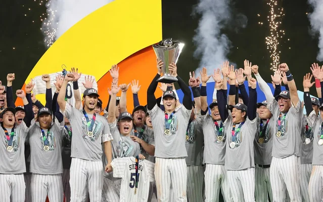

WBC日本代表「侍ジャパン」が14年ぶり3度目の優勝!!

ワールド・ベースボール・クラシック（WBC）の舞台で、侍ジャパンが圧倒的なパフォーマンスを見せ、大会制覇を果たしました。
歓喜に包まれたこの瞬間は、日本の野球ファンにとって忘れられない瞬間となりました。
日本代表チームは大会を通じて絶え間ない努力と卓越した技術を発揮し、一つ一つの試合で強豪相手に圧倒的な力を見せつけてきました。
ファンは、各選手が結集し、協力して力を発揮する様子に感動し、期待を寄せていました。
特に決勝戦では、相手国にリードを許しながらも劇的な勝利を収め、日本代表は歴史的な瞬間を迎えました。
選手たちは熱狂的な応援に支えられ、大会MVPに輝いた大谷翔平選手の活躍が光りました。
大会後、日本中が歓喜に包まれ、勝利を祝福しました。これにより、野球は再び国民的なスポーツとしての地位を確立し、
未来の選手たちにとっては憧れの的となりました。
日本代表監督の栗山監督は「みなさんの思いが力になった。感謝でいっぱいだ」とコメントしました。
WBCでの優勝は、14年ぶりということもあり日本の野球ファンにとって長い間の夢でした。この歴史的な瞬間は、
国内外の野球ファンに感動と興奮をもたらし、日本のスポーツ史に金字塔を打ち立てるものとなりました。